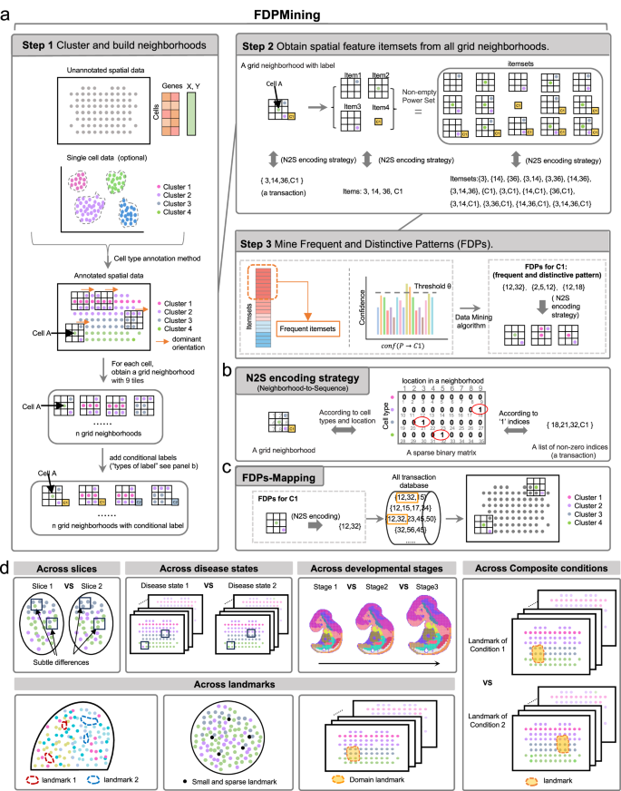
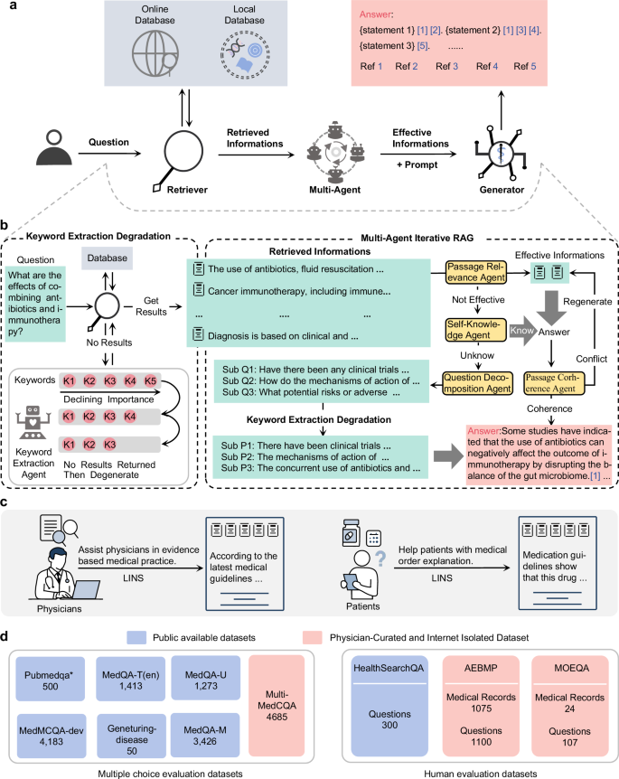
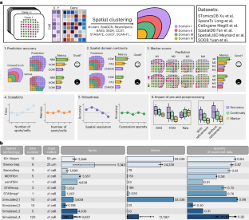
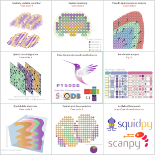

Scalable discovery of spatial multicellular patterns via neighborhood-to-sequence transformation
Communications Biology 2026
ACADEMIC HOMEPAGE
Spatial Omics & Biomedical AI
Computational methods for understanding
spatial biology and biomedical information.
My research focuses on computational methods for spatial omics and biomedical AI. I work on discovering multicellular spatial patterns, evaluating spatial transcriptomics analysis methods, and making spatial omics datasets easier to access and analyze.
My publications also explore evidence-grounded medical question answering and information extraction from clinical text. Below are my publications.
† Equal contribution. Publications are ordered by year.

Communications Biology 2026


